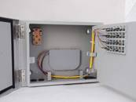

Fiber Optic Cable Distribution Box is an access device for connecting backbone cable and distribution cable installed either indoor or outdoor. Fiber optic cables, FTTH cables and splitters are introduced, fixed and connected in the box.
There are indoor type and outdoor type distribution boxes; indoor type usually locates in the corridor or weak current well while the outdoor type locates on wall or poles. It can also be divided into plastic type and metallic type according to material.
Features
· Could alter to either fiber optical distribution box or fiber division box according to configuration changes
· Could install box-type optical splitter
· Optional distribution board with cables hierarchical management
· Possesses fastening devices of both bow-type cables and standard optical cables
· (Cold) welding and sc connector are suitable for optical distribution cable
· Finely designed cable routing guarantees curvature radius of cable and fiber
Ordering Guide
NO. |
Type |
Dimention (mm) H*W*D |
Description |
1 |
GPX910-FJN-24a |
270*360*120 |
24 ports，1 set of 2：16 splitter optional, indoor type |
2 |
GPX910-FJN-36a |
320*360*120 |
32 ports，1 set of 2：32 splitter optional, indoor type |
3 |
GPX910-FJN-48a |
370*360*120 |
48 ports，1 set of 2：32 splitter optional, indoor type |
4 |
GPX910-FJN-72a |
320*470*150 |
72 ports，1 set of 2：64 splitter optional, indoor type |
5 |
GPX910-FJW-24a |
270*360*120 |
24 ports，1 set of 2：16 splitter optional, outdoor type |
6 |
GPX910-FJW-36a |
320*360*120 |
32 ports，1 set of 2：32 splitter optional, outdoor type |
7 |
GPX910-FJW-48a |
370*360*120 |
48 ports，1 set of 2：32 splitter optional, outdoor type |
8 |
GPX910-FJW-72a |
320*470*150 |
72 ports，1 set of 2：64 splitter optional, outdoor type |
NO. |
Type |
Dimention (mm) H*W*D |
Description |
1 |
GPX910-FJN-24b |
340*420*72 |
24 ports，1 set of 2：16 splitter optional, indoor type |
2 |
GPX910-FJN-36b |
340*420*96 |
36 ports，1 set of 2：32 splitter optional, indoor type |
3 |
GPX910-FJN-48b |
350*420*120 |
48 ports，1 set of 2：32 splitter optional, indoor type |
4 |
GPX910-FJN-72b |
460*480*120 |
72 ports，1 set of 2：64 splitter optional, indoor type |
5 |
GPX910-FJW-24b |
340*420*72 |
24 ports，1 set of 2：16 splitter optional, outdoor type |
6 |
GPX910-FJW-36b |
340*420*96 |
36 ports，1 set of 2：32 splitter optional, outdoor type |
7 |
GPX910-FJW-48b |
350*420*120 |
48 ports，1 set of 2：32 splitter optional, outdoor type |
8 |
GPX910-FJW-72b |
460*480*120 |
72 ports，1 set of 2：64 splitter optional, outdoor type |
c.Fiber Optic Cable Distribution Box (Metallic)(金属型光缆分纤箱）
Fiber Optic Cable Distribution Box is an access device for connecting backbone cable and distribution cable installed either indoor or outdoor. Fiber optic cables, FTTH cables and splitters are introduced, fixed and connected in the box.
There are indoor type and outdoor type distribution boxes; indoor type usually locates in the corridor or weak current well while the outdoor type locates on wall or poles. It can also be divided into plastic type and metallic type according to material.
Features
* Plug type splitter installed
* Rotatable distribution panel, respectively management
* Providing fixing device for outdoor cable and FTTH cable
* Cable can be spliced, or use field connector
* Optimized design ensures the bending radius of fiber optic cables
Ordering Guide
NO. |
Type |
Dimension (mm) H*W*D |
Description |
1 |
GPX910-FJN-24c |
350*340*100 |
2 pieces 1：8 or 1 piece 1：16 splitter installed, indoor type |
2 |
GPX910-FJN-36c |
460*340*100 |
4 pieces 1：8, 2 pieces 1：16 or 1 piece 1：32 splitter installed, indoor type |
3 |
GPX910-FJW-24c |
350*340*100 |
2 pieces 1：8 or 1 piece 1：16 splitter installed, outdoor type |
4 |
GPX910-FJW-36c |
460*340*100 |
4 pieces 1：8, 2 pieces 1：16 or 1 piece 1：32 splitter installed, outdoor type |